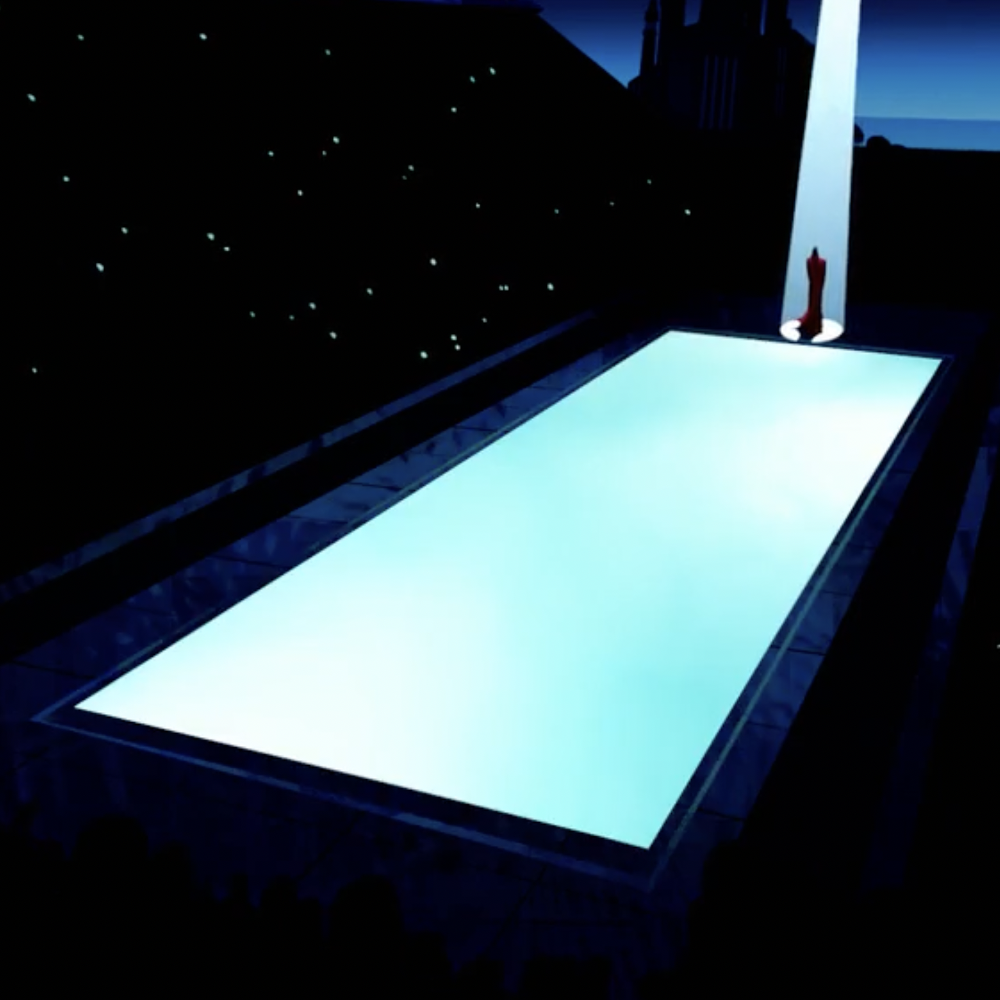
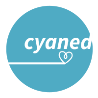
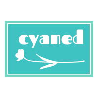

- johnny mercer
mood
“i will immerse myself,
and as I do, i will slowly shut down my higher brain functions,
un-making myself, leaving just enough to appreciate my surroundings
to extract some simple pleasure from the execution of a task well-done.
my search for truth is finished at last.
i’m going home.”
-zima

preface
welcome! it’s Shu. glad you came.
“non sunt multiplicanda entia sine necessitate.” i believe in occam’s razor, so i built this site in the simplest way possible to only show the essentials for you to know about myself, all the cool things i’m into, and, hopefully, to discover any resemblance between us, so that we could be friends.
life is so short, so i try to spend my time in my own way by experiencing different forms of “being a human”: as a mathematician, an engineer, a programmer, a skater, a snowboarder, a guitar player, a producer, a traveler, and so many others. i’m actively exploring my interests and new things, and refuse to settle with anything, even those i’ve been always good at.
“cyaned” comes from cyan, the color of shallow water over a sandy beach, and the independent record label of frank ocean (“blonded”) - he’s inspired me so much and taught me how to be honest with myself.
now, maybe it’s better to spread things out a bit so you can walk around on this spacy canvas and see if anything catches you.
musical & visual;
programming & hacking;
mathematics & research;
skateboarding & snowboarding;
more

musical & visual
music has always been the backbone of my energy - i need good tracks much more than a morning coffee shot. my interests cover a wide range of sounds, including classical, jazz, blues, contemporary r&b, electronic, indie rock, and ambient.
i was raised in a family of western pop music fans, and in early years of college i started to make my own recordings and productions inspired by kanye west, frank ocean, and justin vernon. since 2019 i’ve started to learn jazz guitar and gone almost completely old-school, filling all of my spare time with 70s jazz and blues live sessions by wes montgomery, charlie parker, thelonious monk and so many other greatests.
i enjoy playing electric guitar and synthesizer - i have a pearl white fender strat and an ocean blue ibanez s-series. in terms of music tech, my fav has always been logic pro, lilypond, and sonic pi.
i’m also very into combining soundtracks with visual productions - i do experiments with anime re-edits and my own soundtrack re-mixes. one recent example 📹, in which visuals originate from “your name”.
more about my work in musical and visual production, please see channel “aesthetics”.

programming & hacking
i code, for a living and for fun, as a devout disciple in the immortal gnu/linux community. all of my computing devices are running linux - i feel more love everyday from the fsf and open-source community.
when i’m with my silicon pals, i only need two things: a terminal and a browser. i do all of my output-oriented tasks in vim, along with a bundle of cool cli tools, from coding to writing notes, from email to file management. i love the feeling of directly talking to my machine thru texts and commands. any task with graphics involved? chrome is more than enough.
i keep everything lightweight and simplistic, so i’m not a floating windows guy - i can only take i3wm or stay in the full-screen mode to be comfortable and productive. i customize as many things as possible in my digital world and maintain my personal system setup in this dotfile repo, and as you might have guessed, i use a customized hhkb pro2, and i think it’s the one, for life.
coding is full of joy to me. i write python and r in my full-time job solving np-hard mathematical problems. in my spare time i do julia and ruby for toy projects, also build some interesting diy hard-ware, like a camera taking airplane photos by itself powered by a rpi4 and a coral tpu (see here).
more about my work in development, please see channel “deductivism”.

mathematics & research
ever since i could remember, i’ve been addicted to solving math problems (and crushing other kids mentally :D). when i was 11, i got selected in the china national team for asia-pacific math olympiad (for primary school students of course lol). not a big deal but it was the only global contest i even attended. since then i realized that it might actually be something i can make a living from.
before college, i competed in all major national olympiad contests in china, and i finally got accepted by jiao tong university (the so-called eastern mit) by winning top 150 in national physics olympiad. it’s a breath-taking journey teaching me so many life lessons, like how to push myself to the limit, how to wisely manage my time, absolute self-control, exploiting my full potential, and grinding for it.
i study quant finance and economics in college and keep up the momentum at mit sloan. here in the cambridge geek heaven i grew a lot of interests in operations research and math optimization due to their similar nature to solving a physical system. now i’m focusing on large-scale optimization problems in real-world applications, mostly in an investment management context - “how to find the best portfolio to invest in the fastest way?”
as many other tech fanatics, i’m also very into machine learning and artificial intelligence. i use pytorch-lightning and do kaggle occasionally with my best friends, but i’d say that’s more like execution than creation.
more about my work in research, please see channel “deductivism”.

skateboarding & snowboarding
i consider myself as “somewhat talented in sports”, and i tried many of them. from the experience i have, snowboarding and skateboarding are undoubtedly the two hardest subjects. to me they are not just entertainment, but the mental training i’ve been lacking for so long in my life.
my first time snowboarding dated back to 2018, in louise lake, banff national park - the stunning view set up my first impression for snowboarding. since then i’ve been training every week as long as there’s some good snow around. i began with duck stance and a park twin board, then i switched to directional snow surfing inspired by kotsugai naoto - now i’m riding a forward stance of (30, 12) with a powder special edition of arbor clovis 157 (see my maintenance routine 📹).
as simplistic i am in tech world, i’m naturally fascinated by the experience of floating in a raw and pure world covered with white powder and fluffy bubbles. even the trip to ski resort itself is enjoyable enough - i can’t express how much i love the sense of escaping from the noisy modern world and being able to hear myself clearly.
skateboarding is another story - it’s just a pure mental game. there’s an unimaginably huge hump at the beginning; riding down the road, cruising through traffics, and jumping ollies can already intimidate so many beginners, simply because they’re, just, too, hard. the risk and return of each attempt when learning a new trick is just so disproportionate that everything else in life, all of a sudden, appears to be so easy and chill.
having said that, the day you got your first kickflip will indeed be the best day of your life. trust me.

more
tennis, swimming, lego…